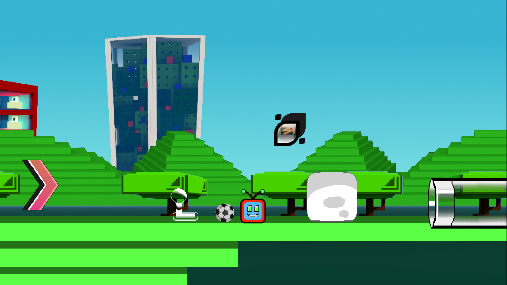

Formación académica:
- Técnico en Computación
- Ingeniería en Sistemas Computacionales (en curso)
Correo electrónico:
- alanpidal7@gmail.com
Mis redes:
Hobbies:
Entre mis pasatiempos y áreas de interés están, ver videos de divulgación científica y tecnológica. Por ejemplo, entre mis canales favoritos de YouTube se encuentran: QuantumFracture, Date un Vlog, El Robot de Platón, Nate Gentile, Facu Peralta, entre otros. Disfruto de jugar videojuegos, aunque no me considero un gamer, pero disfruto principalmente de juegos casuales, incluso he probado a programar algunos videojuegos sencillos, aunque no he profundizado mucho en ello. Entre mis proyectos actuales está un simulador del metro de la Ciudad de México, desarrollado en Godot, el cual ya cuenta con las primeras cuatro líneas de metro. Más adelante, se agrega el link al proyecto. Actualmente, tengo otro desarrollo, un juego de plataformas en 2D, llamado TV Roudy, el cual de momento ha tomado algo de tiempo, al no emplear IA para hacerlo. Asimismo, me gusta la programación y a veces la practico un poco prescindiendo de la IA, como en los viejos tiempos. Disfruto de escuchar música, y si bien no soy gran conocedor, entre mis grupos favoritos está Imagie Dragons, Fallout Boy, Coldplay, Queen, y una banda que recién descubrí llamada Calva Louise. Asimismo tengo dos canales de YouTube donde subo contenido ocasionalmente, en uno de ellos subo gameplays de YouTube, en otro he subido tutorías de matemáticas. También tengo interés en el idioma francés y japonés, así que he estado aprendiendo un poco de ambos idiomas.

Acerca de criptografía:
Biografía de Elizebeth Smith Friedman
Elizebeth Smith Friedman (1892-1980) fue una criptóloga y criptoanalista estadounidense, reconocida por su trabajo en el descifrado de códigos secretos y su contribución a la seguridad nacional de Estados Unidos. Es considerada una de las mujeres pioneras en el campo de la criptología.
Nació el 26 de agosto de 1892 en Huntington, Indiana, Estados Unidos. Desde joven mostró interés por la literatura y los idiomas, por lo que estudió literatura inglesa en Hillsdale College. En 1916 comenzó a trabajar en Riverbank Laboratories, donde investigó mensajes ocultos y técnicas para descifrar códigos. Allí conoció a William Friedman, también criptólogo, con quien se casó en 1917.
Durante la Ley Seca en Estados Unidos (1920-1933), Elizebeth colaboró con las autoridades para descifrar mensajes secretos utilizados por contrabandistas de alcohol. Gracias a sus habilidades, contribuyó a numerosas investigaciones contra redes criminales y ayudó a reunir pruebas para procesar a sus integrantes.
Durante la Segunda Guerra Mundial, participó en investigaciones de contraespionaje que ayudaron a descubrir redes de agentes nazis en América del Sur. Su trabajo fue muy importante para la seguridad estadounidense, aunque muchos de sus logros permanecieron clasificados durante años.
Elizebeth Smith Friedman falleció el 31 de octubre de 1980, a los 88 años, en Plainfield, Nueva Jersey. Con el tiempo, su contribución recibió un mayor reconocimiento y en 1999 fue incorporada al Salón de Honor Criptológico de la Agencia de Seguridad Nacional de Estados Unidos.
Legado
Elizebeth Smith Friedman fue una figura fundamental en el desarrollo de la criptología moderna. Su inteligencia, perseverancia y capacidad para descifrar mensajes secretos demostraron la importancia de la criptografía en la lucha contra el crimen y el espionaje, además de abrir camino para otras mujeres en el ámbito de la inteligencia y la seguridad nacional.